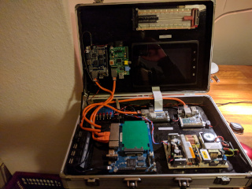

DeviceServer Web Service

The DeviceServer works, have a look at the examples
Monitor digital Values of the DeviceServer
Monitor analog Values of the DeviceServer
Set analog vars of DeviceServer
GUI Elements Example
LCD Example
Ampel Steuerung
DeviceServer Statistics
PHP Info